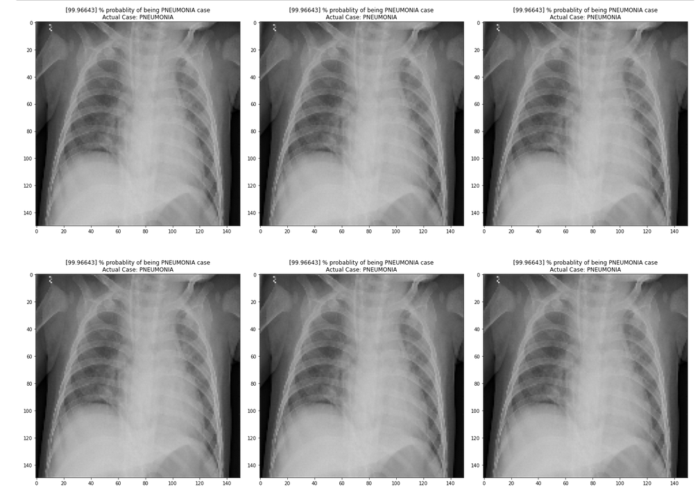
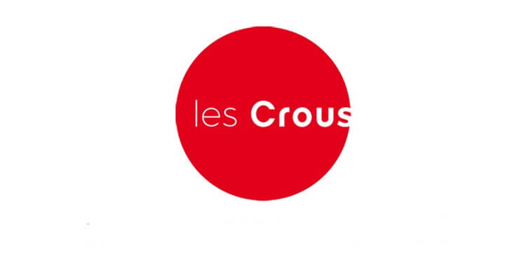

À propos
About
Je suis Melissa Boutlendj, étudiante en Master 1 Management de l’Intelligence Artificielle en santé, une formation qui relie ma passion pour l’intelligence artificielle et le domaine médical. Mon objectif est de faire évoluer les systèmes de santé afin de mieux répondre aux besoins des patients et de faciliter les tâches des professionnels de santé, tout en garantissant une utilisation optimale de la puissance de l’IA au service de la santé publique et privée, dans le respect des cadres légaux et de la confidentialité des patients.
Après mon baccalauréat avec mention en mathématiques, j’ai complété une licence en informatique générale à l'université d'Avignon en France afin de pouvoir me spécialiser pleinement durant mes deux années de master.
Je suis actuellement à la recherche d’un stage de 5 à 6 mois à partir de mars 2026, puis une alternance pour l'année 2026/2027, j’ai hâte de contribuer à des projets ayant un réel impact sur la société.
I am Melissa Boutlendj, a Master’s student in Artificial Intelligence Management for Healthcare, a program that bridges my passion for artificial intelligence and the medical field. My goal is to improve healthcare systems to better meet patients' needs and support healthcare professionals, while ensuring optimal use of AI’s power in both public and private healthcare, in compliance with legal frameworks and patient confidentiality.
After graduating with honors in Mathematics, I pursued a Bachelor’s degree in Computer Science at the University of Avignon in France, before specializing fully in AI during my two-year Master’s program.
I am currently seeking a 5-6 month internship starting in March 23rd 2026 and an apprenticeship for the 2026/2027 academic year, and I am eager to contribute to projects with a real impact on society.
🎓 Formation
- 2025 – 2027 : Master – Management de l'IA en Santé | Centrale Lille
- 2022 – 2025 : Licence Informatique | Université d'Avignon (mention bien)
- 2021 – 2022 : École Nationale Supérieure en Intelligence Artificielle | Algérie
- 2020 – 2021 : Baccalauréat Mathématiques (mention très bien)
🎓 Education
- 2025 – 2027: Master – Management of AI in Healthcare | Centrale Lille
- 2022 – 2025: Bachelor in Computer Science | University of Avignon (with honors)
- 2021 – 2022: National Higher School in Artificial Intelligence | Algeria
- 2020 – 2021: Mathematics Baccalaureate (with highest honors)
🚀 Projects
📚 Academic Projects
🧠 Medical Image Classification
CNN & MLP for CT-scan classification.
💬 Sentiment Analysis
Unsupervised clustering of Amazon reviews.
🌟 Personal Projects
🩺 End-to-End Medical Chatbot
Generative AI + RAG chatbot for healthcare.
🎵 Music Generation App

Text-to-music app powered by Hugging Face generative AI.
📧 Mail Spam Detection
Classifying emails as spam or ham using ML models.
🏠 CROUS Checker
Real-time housing availability monitoring system.
💼 Expériences / Work Experience
💻 Alternante en Développement Web – Anaphore
2024 – 2025
Développement d’applications web en vue js au sein d’Anaphore, une entreprise spécialisée dans la gestion des archives numériques.
Web development (vue js) apprentice at Anaphore, a company specialized in digital archive management.

📊 Stagiaire Data Science – Prodigy InfoTech
2024
Stage à distance en Data Science : manipulation de données, entraînement de modèles de machine learning.
Remote Data Science internship: data preprocessing, model training and evaluation.
📈 Stagiaire en Modélisation Statistique – LMA (Laboratoire de Mathématiques d’Avignon)
2024
Stage académique en modélisation statistique, participation à des projets de recherche en mathématiques appliquées.
Academic internship in statistical modeling, contributing to research projects in applied mathematics.
🤝 Bénévolat
🤝 Volunteering
Bénévole – Secours Populaire Français
Volunteer – Secours Populaire Français
Collecte de dons dans les magasins Intermarché et Decathlon pour aider les familles en difficulté.
Collected donations at Intermarché and Decathlon stores to support families in need.
Bénévole – Fédération Interasso Avignon
Volunteer – Fédération Interasso Avignon
Mise en place et préparation de produits alimentaires pour la distribution hebdomadaire aux étudiants.
Organized and prepared food items for weekly distribution to students.